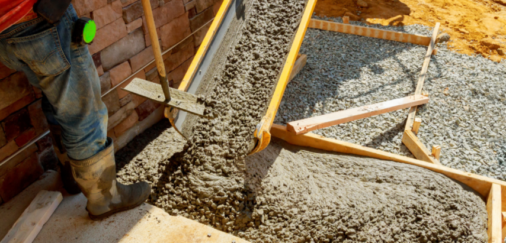

Heavy-Duty Residential & Commercial Concrete Driveways in Melbourne
Your driveway is one of the hardest-working surfaces on your property and the first thing visitors notice from the street. Over time, tree roots, poor original soil compaction, freeze-thaw expansion, and heavy SUVs or delivery trucks cause old driveways to heave, spall, and crack. At Clacy Concrete, we replace failing asphalt and concrete driveways across Melbourne, VIC with structurally engineered concrete built to last 30+ years.
Whether you need a full driveway tear-out and replacement, a third-car parking extension, a reinforced RV or boat pad, or a brand-new driveway for new construction, our crews deliver clean lines, proper stormwater drainage, and dependable load-bearing strength.

Signs It Is Time to Replace Your Driveway
Minor hairline surface cracks can sometimes be sealed, but structural driveway failure requires replacement to protect your vehicles and home foundation. Consider a new concrete driveway if you notice:
- Heaving or Sunken Panels: Trip hazards or uneven slabs where soil has washed out or tree roots have lifted the concrete.
- Alligator Cracking & Deep Potholes: Widespread network cracking indicating sub-base failure or inadequate slab thickness.
- Standing Water Near the Garage: Improper slope causing puddles to collect against your garage door threshold.
- Severe Surface Spalling: Flaking and pitting caused by de-icing salts or non-air-entrained concrete mixes.
Our Concrete Driveway Construction Specifications
A driveway carries thousands of pounds every day. That is why Clacy Concrete builds every driveway in Melbourne and Gippsland & South East Melbourne to commercial-grade residential standards:
1. Full Demolition & Sub-Grade Excavation
We break up and haul away old concrete or asphalt, remove invasive roots, and excavate soft clay or organic pockets. We verify municipal apron and sidewalk regulations so your driveway transition meets local Melbourne codes.
2. Compacted Aggregate Base & Drainage Slope
We lay down 4 to 6 inches of crushed aggregate and compact it in lifts using heavy vibratory compactors. Our crew sets forms with laser levels to guarantee positive drainage away from your garage and toward the street or yard swale.
3. Steel Rebar Reinforcement & Proper Thickness
Standard passenger-vehicle driveways are poured at a true 4 to 5 inches thick with #3 or #4 steel rebar spaced on a grid (typically 18" to 24" on center) supported on chairs. For heavy work trucks, dumpsters, or RV parking pads, we upgrade to 6-inch concrete thickness and tighter rebar spacing.
4. 4,000+ PSI Air-Entrained Mix & Saw-Cut Control Joints
We order high-strength, air-entrained ready-mix concrete designed to resist freeze-thaw stress. After applying a non-slip broom finish or decorative border, we saw-cut straight control joints within 12–24 hours to relieve internal curing stress and keep panels looking sharp.
Driveway Finish & Upgrade Options
Beyond standard broom-finished gray concrete, we offer exposed aggregate finishes, charcoal or warm-earth integral coloring, decorative stamped borders, and driveway widening aprons that create extra room for guest parking or basketball hoops. If your property includes a steep approach or shared turnaround, we also pour textured traction grooves, reinforced curbing, and integrated trench drains to channel heavy rainwater safely away from your garage slab.
For homeowners planning an EV charger installation, detached garage, or backyard workshop, Clacy Concrete can coordinate thickened edge footings and conduit sleeves beneath the driveway pour so future electrical or irrigation lines never require cutting into fresh concrete. Every driveway replacement in Melbourne, VIC also includes clean perimeter backfilling with screened topsoil along the new concrete edges once forms are stripped, leaving your lawn neat and ready for seed or sod.